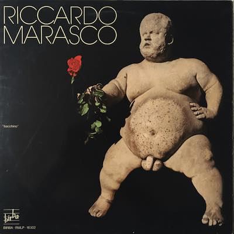
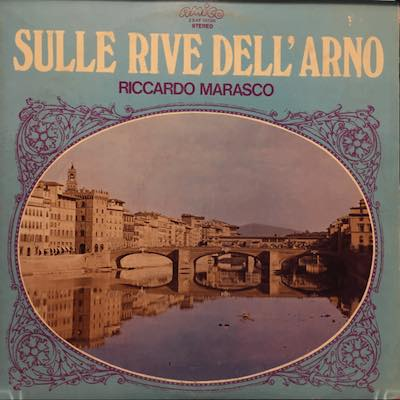
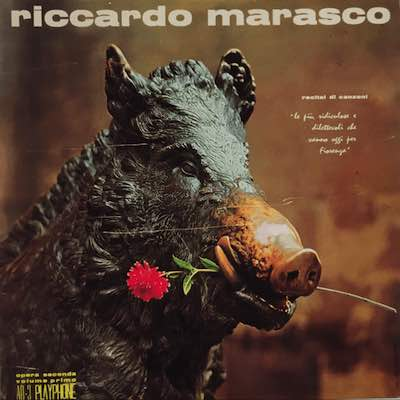
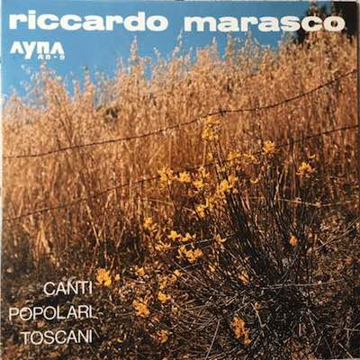
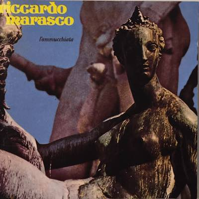
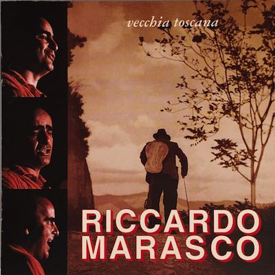

Il BacchinoFirenze sboccata
Recital sulle rive dell'Arno
Il PorcellinoRecital di canzoni. Le più ridiculose e dilettevoli che vanno oggi per FiorenzaOpera seconda volume primo
Canti popolari toscani
Un po' di Toscana vera
L'ammucchiata
Ale' Viola
Vecchia Toscana
Ma Firenze ... la cognoschi??
Pace non più guerra
Bacione a Firenze
La mia Toscana
Chi cerca,trovaVita e canti di Toscana
Decennale dell'alluvione (45 giri)